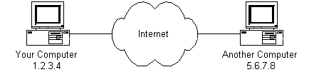
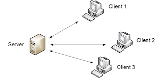

Whatsapp Chatting Architrcture
Virendra Wadher, Nov 27. 10 min read
In this tutorial, we are discussing about real time messaging app. They are essential part of our day to day life. But have you thought how this application work. We are going to discuss about one of real time messaging application Whatsapp.
Before diving into mechanism of whatsapp,let's understand 'How communication works ?'
If two clients(Computer 1 and Computer 2 ) want to communicate or send messages to each other, first address of each computer shouls been known to each other(It may be IP, MAC, or any customized uniques identity) and messages are exchange with each other over a network, in this case it is INTERNET.
But, what if number of clients are in millons and billons and network is very large?It becomes difficult to know the address of each and every client in a very large network, In this case we need componet between the clients called "SERVER" to make system more robust and highly available. The role of server is to coordinate between all the clients connected to it.

Now all clients makes connections with server instead of each other.
When client 1 want to send data to client 3, it first send data to server and server knows the address of client 3, then it forward data to client 3 and vice versa.
The special features about Whatsapp are,
- Text messaging
- Sent + Delivered + Read
Text messaging
How does one person send message to another person? it is one to one chat. You connect to WhatsApp on the cloud via Gateway. External protocol is used when you are taking to Whatsapp. You do not need big headers that HTTP provides you when you're talking internally. Gateway taking care of all these activities.Once you(client 1) connect to the Gateway, let's assume you sending a message to client 2. The Gateway sends the message that you already send to client 2.
Sent + Delivered + Read

- Sent: Whatsapp server receive the message when we send a message.
- Delivered: Message is delivered to the receiver from the whatsapp server.
- Seen: Messages is seen or opened by the receiver.
Thanks for reading !!